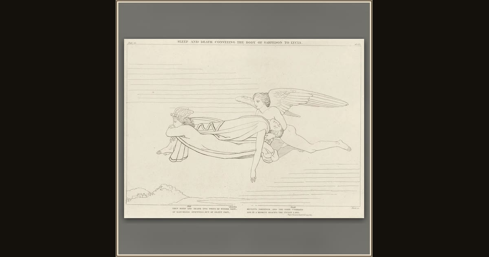

Sleep and Death conveying the body of Sarpedon to Lycia
Tommaso Piroli, after design by John Flaxman (II) · 1805 · rijksmuseum
Sleep and Death carry Sarpedon's body through the air toward Lycia; these lines name the twin bearers who take him there after Apollo washes and clothes him (16.681–683). Explore its place in Homer's Iliad, Book XVI, line 681.